Book XIII · The Scriptures of the Many Paths
The Tractates of the Sages
The rulings of the sages and the disputes of their houses, left open for the next reader.

Book XIII · The Scriptures of the Many Paths
The rulings of the sages and the disputes of their houses, left open for the next reader.